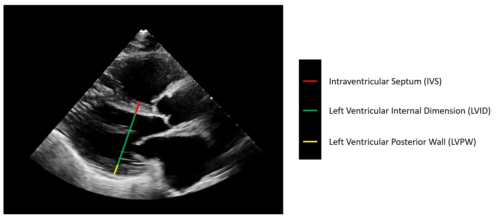
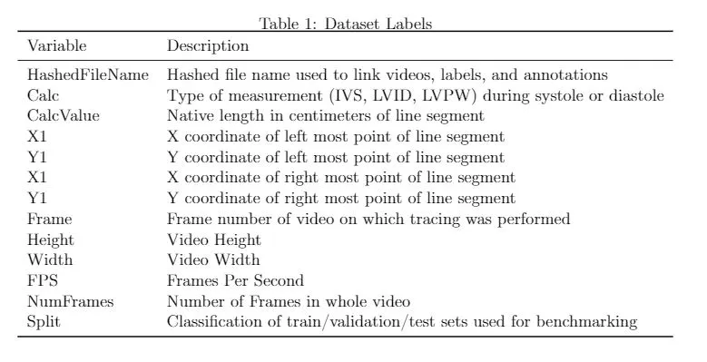

Echocardiography, or cardiac ultrasound, is the most widely used and readily available imaging modality to assess cardiac function and structure. Combining portable instrumentation, rapid image acquisition, high temporal resolution, and without the risks of ionizing radiation, echocardiography is one of the most frequently utilized imaging studies in the United States and serves as the backbone of cardiovascular imaging. For diseases ranging from heart failure to valvular heart diseases, echocardiography is both necessary and sufficient to diagnose many cardiovascular diseases. In addition to our deep learning model, we introduce a new large video dataset of echocardiograms (parasternal long axis view) for computer vision research. The EchoNet-LVH dataset includes 12,000 labeled echocardiogram videos and human expert annotations (measurements, tracings, and calculations) to provide a baseline to study cardiac chamber size and wall thickness.
Left ventricular hypertrophy (LVH) and increased heart wall thickness results from chronic remodeling caused by a broad range of systemic and cardiovascular disease including high blood pressure, aortic stenosis, hypertrophic cardiomyopathy, and cardiac amyloidosis. Early detection and characterization of LVH can significantly impact patient care but is limited by under-recognition, measurement error and variability, and difficulty differentiating etiologies of LVH. To overcome this challenge, we present EchoNet-LVH - a deep learning workflow that automatically quantifies ventricular hypertrophy with precision equal to human experts and predicts etiology of LVH.

Echocardiogram Videos: A standard echocardiogram study consists of a series of videos and images visualizing the heart from different angles, positions, and image acquisition techniques. The EchoNet-LVH dataset contains 12,000 parasternal-long-axis echocardiography videos from individuals who underwent imaging as part of routine clinical care at Stanford Medicine. Each video was cropped and masked to remove text and information outside of the scanning sector. The resulting videos are at native resolution.

Measurements: In addition to the video itself, each study is linked to clinical measurements and calculations obtained by a registered sonographer and verified by a level 3 echocardiographer in the standard clinical workflow. During both systole and diastole, clinicians measure intraventricular septum (IVS) thickness, left ventricular internal dimension (LVID), and left ventricular posterior wall (LVPW) thickness in the parasternal long axis view.
Further description of the dataset is available in our preprint.
Our code is available here.
By registering for downloads from the EchoNet-LVH Dataset, you are agreeing to this Research Use Agreement, as well as to the Terms of Use of the Stanford University School of Medicine website as posted and updated periodically at http://www.stanford.edu/site/terms/.
1. Permission is granted to view and use the EchoNet-LVH Dataset without charge for personal, non-commercial research purposes only. Any commercial use, sale, or other monetization is prohibited.
2. Other than the rights granted herein, the Stanford University School of Medicine (“School of Medicine”) retains all rights, title, and interest in the EchoNet-LVH Dataset.
3. You may make a verbatim copy of the EchoNet-LVH Dataset for personal, non-commercial research use as permitted in this Research Use Agreement. If another user within your organization wishes to use the EchoNet-LVH Dataset, they must register as an individual user and comply with all the terms of this Research Use Agreement.
4. YOU MAY NOT DISTRIBUTE, PUBLISH, OR REPRODUCE A COPY of any portion or all of the EchoNet-LVH Dataset to others without specific prior written permission from the School of Medicine.
5. YOU MAY NOT SHARE THE DOWNLOAD LINK to the EchoNet-LVH dataset to others. If another user within your organization wishes to use the EchoNet-LVH Dataset, they must register as an individual user and comply with all the terms of this Research Use Agreement.
6. You must not modify, reverse engineer, decompile, or create derivative works from the EchoNet-LVH Dataset. You must not remove or alter any copyright or other proprietary notices in the EchoNet-LVH Dataset.
7. The EchoNet-LVH Dataset has not been reviewed or approved by the Food and Drug Administration, and is for non-clinical, Research Use Only. In no event shall data or images generated through the use of the EchoNet-LVH Dataset be used or relied upon in the diagnosis or provision of patient care.
8. THE ECHONET-LVH DATASET IS PROVIDED "AS IS," AND STANFORD UNIVERSITY AND ITS COLLABORATORS DO NOT MAKE ANY WARRANTY, EXPRESS OR IMPLIED, INCLUDING BUT NOT LIMITED TO WARRANTIES OF MERCHANTABILITY AND FITNESS FOR A PARTICULAR PURPOSE, NOR DO THEY ASSUME ANY LIABILITY OR RESPONSIBILITY FOR THE USE OF THIS ECHONET-LVH DATASET.
9. You will not make any attempt to re-identify any of the individual data subjects. Re-identification of individuals is strictly prohibited. Any re-identification of any individual data subject shall be immediately reported to the School of Medicine.
10. Any violation of this Research Use Agreement or other impermissible use shall be grounds for immediate termination of use of this EchoNet-LVH Dataset. In the event that the School of Medicine determines that the recipient has violated this Research Use Agreement or other impermissible use has been made, the School of Medicine may direct that the undersigned data recipient immediately return all copies of the EchoNet-LVH Dataset and retain no copies thereof even if you did not cause the violation or impermissible use.
In consideration for your agreement to the terms and conditions contained here, Stanford grants you permission to view and use the EchoNet-LVH Dataset for personal, non-commercial research. You may not otherwise copy, reproduce, retransmit, distribute, publish, commercially exploit or otherwise transfer any material.
You may use EchoNet-LVH Dataset for legal purposes only.
You agree to indemnify and hold Stanford harmless from any claims, losses or damages, including legal fees, arising out of or resulting from your use of the EchoNet-LVH Dataset or your violation or role in violation of these Terms. You agree to fully cooperate in Stanford’s defense against any such claims. These Terms shall be governed by and interpreted in accordance with the laws of California.
High-Throughput Precision Phenotyping of Left Ventricular Hypertrophy with Cardiovascular Deep Learning.
Grant Duffy, Paul P Cheng, Neal Yuan, Bryan He, Alan C. Kwan, Matthew J. Shun-Shin, Kevin M. Alexander, Joseph Ebinger, Matthew P. Lungren, Florian Rader, David H. Liang, Ingela Schnittger, Euan A. Ashley, James Y. Zou, Jignesh Patel, Ronald Witteles, Susan Cheng, David Ouyang JAMA Cardiology (2022)
For inquiries, contact us at ouyangd@stanford.edu.